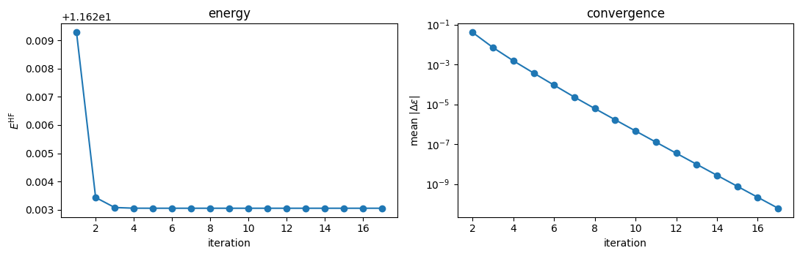
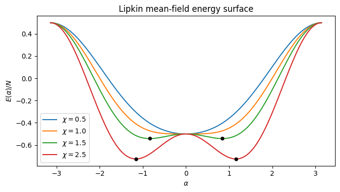
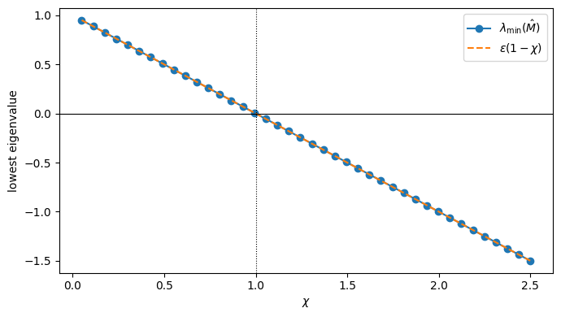
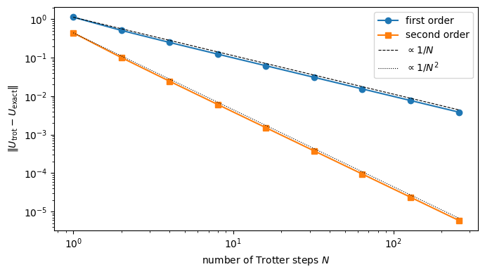
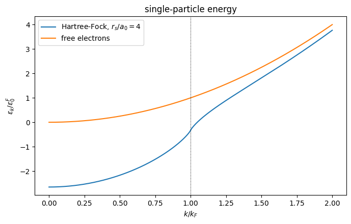
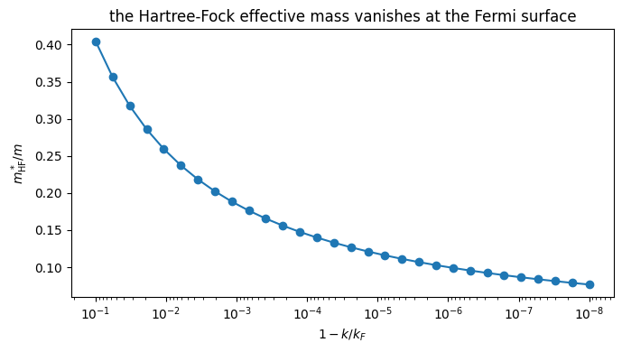
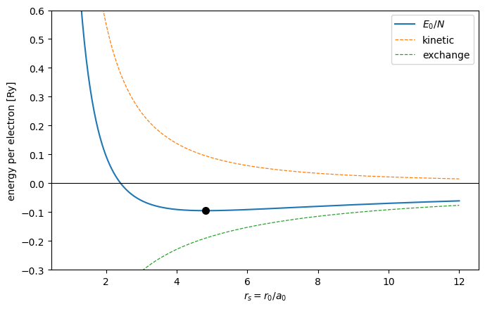

7. Mean-field approaches#
Companion notebook to Chapter 6 of Quantum mechanics for many-particle
systems. Every number quoted in the chapter is produced here. The code is
the same as in BookManybody/BookMaterial/Programs/hartreefock.py.
Contents:
The self-consistent field loop, and Brillouin’s theorem
When the mean field does nothing: the pairing model
Thouless’ theorem, verified in the determinant basis
Stability, and the Lipkin instability at \(\chi = 1\)
The Baker-Campbell-Hausdorff expansion
The Trotter-Suzuki splitting
The infinite homogeneous electron gas
import sys, os
import numpy as np
import matplotlib.pyplot as plt
sys.path.insert(0, os.path.join("..", "BookManybody", "BookMaterial", "Programs"))
import hartreefock as hf
np.set_printoptions(precision=6, suppress=True, linewidth=120)
7.1. 1. The self-consistent field loop#
The Hartree-Fock equations
are nonlinear only because \(\rho\) depends on the eigenvectors we are looking for. Each iteration is therefore a single Hermitian diagonalisation – the algorithms of Chapter 1 – wrapped in a fixed-point loop.
hf.demo_scf()
==========================================================================
1. The self-consistent field loop
==========================================================================
Spinless fermions in a one-dimensional oscillator trap with a
softened Coulomb repulsion, eight oscillator orbitals. Each
iteration builds the density matrix, builds the Fock matrix and
diagonalises it -- chapter 1 inside chapter 2's eigenvalue problem.
N iterations E(reference) E(Hartree-Fock) gain
2 17 2.69018342 2.66308878 -2.71e-02
3 17 6.46801021 6.39016133 -7.78e-02
4 17 11.77084712 11.62305385 -1.48e-01
Brillouin's theorem at convergence: max |f_ai| = 8.72e-11
The reference no longer couples to the singles, which is what
empties the 0p0h-1p1h block of the configuration-interaction
matrix of chapter 5.
7.1.1. Watching it converge#
The energy falls monotonically and the single-particle energies settle. The density matrix is the projector onto the occupied subspace, so it is the object that actually converges; the individual orbitals are fixed only up to a unitary mixing among themselves.
h0, v = hf.trap_system(n_orbitals=8)
scf = hf.SelfConsistentField(h0, v, n_particles=4)
scf.run(verbose=True)
rho = scf.density(scf.C)
print("\ntrace of rho :", np.trace(rho))
print("|rho^2 - rho| :", np.abs(rho @ rho - rho).max())
print("eigenvalues of rho :", np.linalg.eigvalsh(rho))
print("\nmax |f_ai| (Brillouin):", f"{scf.brillouin():.2e}")
1 E = 11.6292802325 mean |d eps| = 6.061e+00
2 E = 11.6234352328 mean |d eps| = 4.016e-02
3 E = 11.6230795358 mean |d eps| = 7.021e-03
4 E = 11.6230556432 mean |d eps| = 1.519e-03
5 E = 11.6230539759 mean |d eps| = 3.675e-04
6 E = 11.6230538563 mean |d eps| = 9.108e-05
7 E = 11.6230538475 mean |d eps| = 2.283e-05
8 E = 11.6230538469 mean |d eps| = 6.102e-06
9 E = 11.6230538468 mean |d eps| = 1.666e-06
10 E = 11.6230538468 mean |d eps| = 4.575e-07
11 E = 11.6230538468 mean |d eps| = 1.262e-07
12 E = 11.6230538468 mean |d eps| = 3.500e-08
13 E = 11.6230538468 mean |d eps| = 9.747e-09
14 E = 11.6230538468 mean |d eps| = 2.725e-09
15 E = 11.6230538468 mean |d eps| = 7.649e-10
16 E = 11.6230538468 mean |d eps| = 2.154e-10
17 E = 11.6230538468 mean |d eps| = 6.083e-11
trace of rho : 3.9999999999999982
|rho^2 - rho| : 9.992007221626409e-16
eigenvalues of rho : [-0. -0. 0. 0. 1. 1. 1. 1.]
max |f_ai| (Brillouin): 8.72e-11
it, energies, drifts = zip(*scf.history)
fig, ax = plt.subplots(1, 2, figsize=(11, 3.6))
ax[0].plot(it, energies, "o-")
ax[0].set_xlabel("iteration"); ax[0].set_ylabel(r"$E^{\rm HF}$")
ax[0].set_title("energy")
ax[1].semilogy(it[1:], drifts[1:], "o-")
ax[1].set_xlabel("iteration")
ax[1].set_ylabel(r"mean $|\Delta\varepsilon|$")
ax[1].set_title("convergence")
fig.tight_layout()
plt.show()

7.2. 2. When the mean field does nothing#
The pairing interaction moves complete pairs and conserves the seniority, so it has no matrix element between the reference and a \(1p\)-\(1h\) state. The Fock matrix is diagonal from the first iteration and Hartree-Fock gains exactly nothing – the whole correlation energy has to come from the doubles, as Chapter 5 found.
hf.demo_pairing()
==========================================================================
2. Hartree-Fock does nothing for the pairing model
==========================================================================
g E(reference) E(Hartree-Fock) E(exact) iterations
0.25 1.75000000 1.75000000 1.73045985 2
0.50 1.50000000 1.50000000 1.41677428 2
1.00 1.00000000 1.00000000 0.63554847 2
The pairing interaction moves whole pairs and cannot change the
seniority, so <Phi_0|H|Phi_i^a> = 0 in any basis and the Fock
matrix is diagonal from the first iteration. Hartree-Fock buys
nothing at all: the whole correlation energy of chapter 5 has to
come from the doubles. A mean field is only as useful as the
one-body physics the interaction actually contains.
7.3. 3. Thouless’ theorem#
is again a single Slater determinant, built from \(\hat b^\dagger_i = \hat a^\dagger_i + \sum_a C_{ai}\hat a^\dagger_a\). The reason is that the one-particle-one-hole operators commute and each squares to zero, so the exponential collapses to a finite product.
hf.demo_thouless()
==========================================================================
3. Thouless' theorem
==========================================================================
Six orbitals, three particles, random amplitudes C_ai of size 0.3.
max |[T_i, T_j]| 2.776e-17
max |T_i^2| 0.000e+00
|exp(T)|c> - prod_i b^+_i|0>| 5.551e-17
<c|exp(T)|c> 1.000000000000
det of the occupied block of D 1.000000000000
The one-particle-one-hole operators commute and each squares to
zero, so the exponential collapses to a product of N factors and
the result is the single determinant built from
b^+_i = a^+_i + sum_a C_ai a^+_a. Its overlap with the reference
is one, so the rotated determinant is never orthogonal to the one
we started from -- exactly the freedom Hartree-Fock explores.
The exponential is not the same as its linear truncation: the
cross terms T_i T_j with i /= j survive and are 2p-2h admixtures.
They are second order in the amplitudes, which is why keeping
only 1p-1h is legitimate for an infinitesimal variation:
scale s |exp(sT)|c> - (1+sT)|c>| ratio
0.4000 3.680e-02
0.2000 9.200e-03 4.00
0.1000 2.300e-03 4.00
0.0500 5.750e-04 4.00
0.0250 1.438e-04 4.00
Halving the amplitudes divides the discarded piece by four.
Note the distinction that matters for the stability analysis: \(e^{\hat T}\) is the product \(\prod_i (1 + \hat T_i)\), not \(1 + \hat T\). The cross terms \(\hat T_i \hat T_j\) with \(i \neq j\) are \(2p\)-\(2h\) admixtures, second order in the amplitudes. Keeping only \(1p\)-\(1h\) is exact for an infinitesimal variation, which is all the Hartree-Fock condition needs.
7.4. 4. Stability of the Hartree-Fock solution#
Going to second order in the amplitudes gives
and the solution is a local minimum only if \(\hat M\) is positive semi-definite. \(\hat M\) is the RPA matrix, so “stable Hartree-Fock” and “real RPA frequencies” are the same statement.
The Lipkin model shows the transition explicitly at \(\chi = |V|(N-1)/\varepsilon = 1\).
hf.demo_stability()
==========================================================================
4. Stability of the Hartree-Fock solution
==========================================================================
The Lipkin model with N = 4 and W = 0. The mean-field energy is
E(alpha)/N = -(eps/2)cos(alpha) - (eps chi/4)sin^2(alpha), with
chi = V(N-1)/eps. The spherical solution alpha = 0 is a minimum
only while chi < 1.
chi V lowest eig of M alpha_min E_mf E_exact deformed
0.25 0.0833 0.75000000 0.000000 -2.000000 -2.020726 False
0.50 0.1667 0.50000000 0.000000 -2.000000 -2.081666 False
0.90 0.3000 0.10000000 0.000000 -2.000000 -2.253886 False
1.00 0.3333 -0.00000000 0.000000 -2.000000 -2.309401 False
1.50 0.5000 -0.50000000 0.841069 -2.166667 -2.645751 True
2.00 0.6667 -1.00000000 1.047198 -2.500000 -3.055050 True
The lowest eigenvalue of M reaches zero exactly at chi = 1, where
the deformed solution appears. Beyond that the spherical
Hartree-Fock state is a saddle point, not a minimum: it still
satisfies the variational condition, but it is not a local
minimum of the energy. M is the matrix of the random-phase
approximation, so a negative eigenvalue and an imaginary RPA
frequency are the same statement.
# the mean-field energy surface on either side of the transition
alpha = np.linspace(-np.pi, np.pi, 400)
fig, ax = plt.subplots(figsize=(7, 4))
for chi in (0.5, 1.0, 1.5, 2.5):
model = hf.LipkinHF(N=4, eps=1.0, V=chi / 3.0)
ax.plot(alpha, model.mean_field_energy(alpha) / model.N,
label=rf"$\chi = {chi}$")
a_min, e_min, deformed = model.mean_field_minimum()
if deformed:
ax.plot([a_min, -a_min], [e_min / model.N] * 2, "k.", ms=9)
ax.set_xlabel(r"$\alpha$"); ax.set_ylabel(r"$E(\alpha)/N$")
ax.set_title("Lipkin mean-field energy surface")
ax.legend(); fig.tight_layout(); plt.show()

# the lowest eigenvalue of M crosses zero exactly at chi = 1
chis = np.linspace(0.05, 2.5, 40)
lowest = []
for chi in chis:
model = hf.LipkinHF(N=4, eps=1.0, V=chi / 3.0)
S = hf.StabilityMatrix(model.matrix(), model.states, model.index,
model.reference, model.N, model.n)
lowest.append(S.eigenvalues()[0])
fig, ax = plt.subplots(figsize=(7, 4))
ax.plot(chis, lowest, "o-", label=r"$\lambda_{\min}(\hat M)$")
ax.plot(chis, 1.0 - chis, "--", label=r"$\varepsilon(1-\chi)$")
ax.axhline(0.0, color="k", lw=0.8)
ax.axvline(1.0, color="k", lw=0.8, ls=":")
ax.set_xlabel(r"$\chi$"); ax.set_ylabel("lowest eigenvalue")
ax.legend(); fig.tight_layout(); plt.show()

7.5. 5. The Baker-Campbell-Hausdorff expansion#
Every term beyond the first is a nested commutator, which is why \(Z\) stays in the same Lie algebra as \(X\) and \(Y\). In Thouless’ theorem all the commutators vanish and the series stops at the first term.
hf.demo_bch()
==========================================================================
5. The Baker-Campbell-Hausdorff expansion
==========================================================================
A = [[0, 0.1], [0, 0]], B = [[0, 0], [0.1, 0]], [A, B] != 0.
order terms kept || e^A e^B - e^Z ||
1 X + Y 7.075e-03
2 + (1/2)[X,Y] 2.379e-04
3 + (1/12)([X,[X,Y]] + [Y,[Y,X]]) 1.179e-05
4 - (1/24)[Y,[X,[X,Y]]] 4.757e-07
Each extra commutator gains roughly two orders of magnitude for
these amplitudes. The series is asymptotic, not convergent for
arbitrary operators, but the operators appearing in Thouless'
theorem are special: there [A, B] = 0 for every pair, the series
stops at the first term, and the exponential is exact.
# compare the truncated series against the exact logarithm
A = np.array([[0.0, 0.1], [0.0, 0.0]])
B = np.array([[0.0, 0.0], [0.1, 0.0]])
Z_exact = hf.bch_exact_log(A, B).real
print("exact Z = log(e^A e^B):\n", Z_exact)
for n in (1, 2, 3, 4):
Z = hf.bch_series(A, B, n)
print(f"order {n}: ||Z_n - Z|| = {np.linalg.norm(Z - Z_exact):.3e}")
exact Z = log(e^A e^B):
[[ 0.004992 0.099834]
[ 0.099834 -0.004992]]
order 1: ||Z_n - Z|| = 7.063e-03
order 2: ||Z_n - Z|| = 2.355e-04
order 3: ||Z_n - Z|| = 1.177e-05
order 4: ||Z_n - Z|| = 4.710e-07
7.6. 6. The Trotter-Suzuki splitting#
Reading the BCH formula backwards gives the splitting error:
The symmetric (Strang) product removes the leading commutator, leaving a local error \(O(\Delta^3)\).
hf.demo_trotter()
==========================================================================
6. The Trotter-Suzuki splitting
==========================================================================
A single qubit with H = sigma_x + sigma_z, t = 1, [X, Z] = -2i Y.
N first order ratio second order ratio
1 1.130e+00 4.436e-01
2 5.125e-01 2.21 1.006e-01 4.41
4 2.493e-01 2.06 2.443e-02 4.12
8 1.238e-01 2.01 6.061e-03 4.03
16 6.177e-02 2.00 1.513e-03 4.01
32 3.087e-02 2.00 3.779e-04 4.00
64 1.543e-02 2.00 9.448e-05 4.00
Halving the step size halves the first-order error and quarters
the second-order one: the global errors are O(t^2/N) and
O(t^3/N^2), exactly as the leading commutators of the BCH series
predict.
X = np.array([[0.0, 1.0], [1.0, 0.0]])
Z = np.array([[1.0, 0.0], [0.0, -1.0]])
rows = hf.trotter_error(X, Z, t=1.0, steps=(1, 2, 4, 8, 16, 32, 64, 128, 256))
N, e1, e2 = np.array(rows).T
fig, ax = plt.subplots(figsize=(7, 4))
ax.loglog(N, e1, "o-", label="first order")
ax.loglog(N, e2, "s-", label="second order")
ax.loglog(N, e1[0] / N, "k--", lw=0.8, label=r"$\propto 1/N$")
ax.loglog(N, e2[0] / N**2, "k:", lw=0.8, label=r"$\propto 1/N^2$")
ax.set_xlabel("number of Trotter steps $N$")
ax.set_ylabel(r"$\|U_{\rm trot} - U_{\rm exact}\|$")
ax.legend(); fig.tight_layout(); plt.show()

7.7. 7. The infinite homogeneous electron gas#
With \(x = k/k_F\) and
the Hartree-Fock single-particle energy is
hf.demo_electron_gas()
==========================================================================
7. The infinite homogeneous electron gas
==========================================================================
Hartree-Fock single-particle energy, r_s/a_0 = 4:
x = k/k_F F(x) eps^HF/eps_0^F free
0.00 1.000000 -2.652000 0.0000
0.25 0.978899 -2.533540 0.0625
0.50 0.911980 -2.168570 0.2500
0.75 0.783779 -1.516081 0.5625
1.00 0.500000 -0.326000 1.0000
1.25 0.252812 0.892042 1.5625
1.50 0.164700 1.813214 2.2500
2.00 0.088020 3.766570 4.0000
band width eps(k_F) - eps(0) = 2.3260
closed form 1 + 0.3315 r_s/a_0 = 2.3260
(the free gas has a band width of exactly 1, so the exchange term
more than doubles it)
Effective mass just below the Fermi surface:
1 - x = 1.0e-02 m*_HF / m = 0.256074
1 - x = 1.0e-03 m*_HF / m = 0.184829
1 - x = 1.0e-04 m*_HF / m = 0.144226
1 - x = 1.0e-05 m*_HF / m = 0.118208
1 - x = 1.0e-06 m*_HF / m = 0.100138
The derivative of F diverges logarithmically at x = 1, so the
effective mass goes to zero and the level density at the Fermi
surface vanishes. This is wrong -- metals have a finite density
of states -- and the cure is screening, which is what the
random-phase approximation supplies.
Energy per electron in Rydberg, E_0/N = 2.21/r_s^2 - 0.916/r_s:
kinetic coefficient (3/5)(9 pi/4)^(2/3) = 2.2099
exchange coefficient (3/2 pi)(9 pi/4)^(1/3) = 0.9163
r_s E_0/N [Ry]
1.00 1.294000
2.00 0.094500
3.00 -0.059778
4.00 -0.090875
4.83 -0.094916
6.00 -0.091278
8.00 -0.079969
minimum at r_s = 4.8253, E_0/N = -0.094916 Ry = -1.2914 eV
The gas is bound at the Hartree-Fock level, at a density in the
range observed in the alkali metals -- a real success of the
method, even though the effective mass is qualitatively wrong.
gas = hf.ElectronGas(rs_over_a0=4.0)
x = np.linspace(1e-6, 2.0, 800)
fig, ax = plt.subplots(figsize=(7, 4.5))
ax.plot(x, gas.energy(x), label=r"Hartree-Fock, $r_s/a_0 = 4$")
ax.plot(x, x**2, label="free electrons")
ax.axvline(1.0, color="k", lw=0.8, ls=":")
ax.set_xlabel(r"$k/k_F$")
ax.set_ylabel(r"$\varepsilon_k / \varepsilon_0^F$")
ax.set_title("single-particle energy")
ax.legend(); fig.tight_layout(); plt.show()
print(f"band width, Hartree-Fock : {gas.band_width():.4f}")
print(f"band width, free gas : 1.0000")
print("Exchange more than doubles the width of the occupied band.")

band width, Hartree-Fock : 2.3260
band width, free gas : 1.0000
Exchange more than doubles the width of the occupied band.
7.7.1. The pathology at the Fermi surface#
\(F'(x)\) diverges logarithmically at \(x=1\), so the slope of \(\varepsilon^{\rm HF}_k\) is infinite there, the effective mass goes to zero and the level density
vanishes at the Fermi surface. Real metals have a finite density of states – it is what gives them a linear specific heat. The culprit is the unscreened \(1/q^2\) of the bare Coulomb interaction, and the cure is the random-phase approximation.
deltas = np.logspace(-1, -8, 30)
mstar = [gas.effective_mass(d) for d in deltas]
fig, ax = plt.subplots(figsize=(7, 4))
ax.semilogx(deltas, mstar, "o-")
ax.invert_xaxis()
ax.set_xlabel(r"$1 - k/k_F$")
ax.set_ylabel(r"$m^*_{\rm HF} / m$")
ax.set_title("the Hartree-Fock effective mass vanishes at the Fermi surface")
fig.tight_layout(); plt.show()

7.7.2. The energy per electron#
Kinetic repulsion \(\propto r_s^{-2}\) against exchange attraction \(\propto r_s^{-1}\): the sum has a minimum, so the gas is bound already at the Hartree-Fock level, at a density in the range of the alkali metals.
rs = np.linspace(1.0, 12.0, 400)
E = hf.ElectronGas.energy_per_electron(rs)
rs_eq, e_eq = hf.ElectronGas.equilibrium()
fig, ax = plt.subplots(figsize=(7, 4.5))
ax.plot(rs, E, label=r"$E_0/N$")
ax.plot(rs, 2.21 / rs**2, "--", lw=0.9, label="kinetic")
ax.plot(rs, -0.916 / rs, "--", lw=0.9, label="exchange")
ax.plot(rs_eq, e_eq, "ko", ms=7)
ax.axhline(0.0, color="k", lw=0.8)
ax.set_ylim(-0.3, 0.6)
ax.set_xlabel(r"$r_s = r_0/a_0$"); ax.set_ylabel("energy per electron [Ry]")
ax.legend(); fig.tight_layout(); plt.show()
print(f"equilibrium at r_s = {rs_eq:.4f}")
print(f"E_0/N = {e_eq:.6f} Ry = {e_eq * 13.6057:.4f} eV")
print("For comparison, the correlation energy near equilibrium is about")
print("-0.06 Ry, so exchange alone accounts for roughly half the binding.")

equilibrium at r_s = 4.8253
E_0/N = -0.094916 Ry = -1.2914 eV
For comparison, the correlation energy near equilibrium is about
-0.06 Ry, so exchange alone accounts for roughly half the binding.
7.8. The full program#
Everything above lives in
BookManybody/BookMaterial/Programs/hartreefock.py, which runs as a script
and prints all seven demonstrations of the chapter.
print(open(hf.__file__).read())
"""
Mean-field theory: Hartree-Fock, Thouless rotations, stability, BCH and Trotter.
Companion code to chapter 6 of *Quantum mechanics for Many-particle Systems*.
The self-consistent field problem is set up in terms of the density matrix, so
that each iteration is a single diagonalisation of the Fock matrix -- the
algorithms of chapter 1 applied to the eigenvalue problem of chapter 2. The
Thouless rotation is then verified explicitly in the determinant basis of
chapter 5, the stability matrix is built and diagonalised for the Lipkin
model, and the Baker-Campbell-Hausdorff and Trotter expansions are checked
numerically.
SelfConsistentField -- a general SCF loop, h0 and antisymmetrised v
PairingHF -- Hartree-Fock for the pairing model of chapter 4
ThoulessRotation -- exp(sum C_ai a^+_a a_i)|c> is a single determinant
LipkinHF -- the mean-field energy surface and its instability
StabilityMatrix -- M = [[Delta+A, B], [B*, Delta+A*]]
bch_error -- truncating the BCH series
trotter_error -- first- and second-order splitting
ElectronGas -- the analytic Hartree-Fock solution
Author: Morten Hjorth-Jensen
"""
from itertools import combinations
from math import comb, factorial, pi
import numpy as np
from scipy.linalg import expm, logm
# ---------------------------------------------------------------------------
# Determinants as bit strings (the machinery of chapter 3, section 3.15)
# ---------------------------------------------------------------------------
def popcount(x):
return bin(x).count("1")
def annihilate(state, p):
if not (state >> p) & 1:
return 0, 0
sign = -1 if popcount(state & ((1 << p) - 1)) & 1 else 1
return sign, state ^ (1 << p)
def create(state, p):
if (state >> p) & 1:
return 0, 0
sign = -1 if popcount(state & ((1 << p) - 1)) & 1 else 1
return sign, state | (1 << p)
def apply_string(state, operators):
"""Apply a list of (index, dagger) operators, rightmost first."""
sign = 1
for p, dagger in reversed(operators):
s, state = (create(state, p) if dagger else annihilate(state, p))
if s == 0:
return 0, 0
sign *= s
return sign, state
def determinant_basis(n_orbitals, n_particles):
states = []
for occ in combinations(range(n_orbitals), n_particles):
bits = 0
for p in occ:
bits |= 1 << p
states.append(bits)
states.sort()
return states
# ---------------------------------------------------------------------------
# The self-consistent field problem
# ---------------------------------------------------------------------------
class SelfConsistentField:
"""Solve sum_beta f_ab C_ib = eps_i C_ia with f = h0 + rho . v_AS.
The one-body matrix h0 has shape (n, n) and the antisymmetrised two-body
matrix v has shape (n, n, n, n) with the convention
v[a, b, c, d] = <a b | v | c d>_AS ,
antisymmetric under a <-> b and under c <-> d. The density matrix is
rho_{gd} = sum_{i occupied} C*_{i g} C_{i d} ,
and the Fock matrix
f_{ab} = h0_{ab} + sum_{gd} rho_{gd} <a g| v |b d>_AS .
"""
def __init__(self, h0, v, n_particles):
self.h0 = np.asarray(h0, dtype=float)
self.v = np.asarray(v, dtype=float)
self.n = self.h0.shape[0]
self.n_particles = n_particles
# ------------------------------------------------------------------
def density(self, C):
"""rho from the n_particles lowest columns of C (C[:, i] = orbital i)."""
occ = C[:, :self.n_particles]
return occ @ occ.T
def fock(self, rho):
# f_{ab} = h0_{ab} + sum_{gd} rho_{gd} v[a, g, b, d]
return self.h0 + np.einsum("gd,agbd->ab", rho, self.v)
def energy(self, C):
"""E = sum_i <i|h0|i> + (1/2) sum_ij <ij|v|ij>_AS, in the C basis."""
occ = C[:, :self.n_particles]
one = np.einsum("ai,ab,bi->", occ, self.h0, occ)
two = np.einsum("ai,bj,abcd,ci,dj->", occ, occ, self.v, occ, occ)
return one + 0.5 * two
# ------------------------------------------------------------------
def run(self, max_iter=200, tol=1e-10, verbose=False):
C = np.eye(self.n)
eps_old = np.zeros(self.n)
history = []
for iteration in range(1, max_iter + 1):
rho = self.density(C)
f = self.fock(rho)
eps, C = np.linalg.eigh(f)
energy = self.energy(C)
drift = np.abs(eps - eps_old).sum() / self.n
history.append((iteration, energy, drift))
if verbose:
print(f" {iteration:3d} E = {energy:14.10f} "
f"mean |d eps| = {drift:.3e}")
if drift < tol:
break
eps_old = eps
self.C, self.eps, self.E = C, eps, self.energy(C)
self.iterations = iteration
self.history = history
return self.E, self.eps, C
# ------------------------------------------------------------------
def brillouin(self):
"""max |f_ai| between an occupied and an unoccupied orbital.
At self-consistency the Fock matrix is diagonal in its own
eigenbasis, so this vanishes: <Phi_0|H|Phi_i^a> = 0.
"""
f = self.fock(self.density(self.C))
f_mo = self.C.T @ f @ self.C
occ = slice(0, self.n_particles)
vir = slice(self.n_particles, self.n)
return np.abs(f_mo[vir, occ]).max()
def trap_system(n_orbitals=8, strength=1.0, softening=0.5):
"""Spinless fermions in a 1D oscillator trap with a softened repulsion.
Matrix elements are computed on a grid from the oscillator eigenfunctions,
with v(x, y) = strength / sqrt((x - y)^2 + softening^2).
"""
from numpy.polynomial.hermite import hermval
grid = np.linspace(-8.0, 8.0, 401)
dx = grid[1] - grid[0]
phi = np.zeros((n_orbitals, grid.size))
for k in range(n_orbitals):
coef = np.zeros(k + 1)
coef[k] = 1.0
norm = 1.0 / np.sqrt(2.0**k * factorial(k) * np.sqrt(pi))
phi[k] = norm * hermval(grid, coef) * np.exp(-0.5 * grid**2)
h0 = np.diag(np.arange(n_orbitals) + 0.5)
interaction = strength / np.sqrt((grid[:, None] - grid[None, :])**2
+ softening**2)
# <ab|v|cd> = int dx dy phi_a(x) phi_b(y) v(x,y) phi_c(x) phi_d(y)
direct = np.einsum("ax,by,xy,cx,dy->abcd",
phi, phi, interaction * dx * dx, phi, phi)
v = direct - direct.transpose(0, 1, 3, 2)
return h0, v
# ---------------------------------------------------------------------------
# Hartree-Fock for the pairing model
# ---------------------------------------------------------------------------
class PairingHF:
"""Hartree-Fock for the pairing model of chapter 4.
H = xi sum_{p sigma} (p-1) a^+_{p sigma} a_{p sigma}
- (g/2) sum_{pq} a^+_{p+} a^+_{p-} a_{q-} a_{q+}
Spin-orbital (p, sigma) sits in bit 2(p-1) for sigma = +1 and 2(p-1)+1
for sigma = -1. The point of the exercise is that Hartree-Fock does
nothing here: the pairing interaction has no matrix element between the
reference and a one-particle-one-hole state, so the Fock matrix is
already diagonal in the chosen basis and the iteration stops at once.
"""
def __init__(self, levels=4, n_particles=4, g=1.0, xi=1.0):
self.levels = levels
self.n = 2 * levels
self.n_particles = n_particles
self.g = g
self.xi = xi
def h0(self):
return np.diag([self.xi * (p // 2) for p in range(self.n)])
def v_antisymmetrised(self):
"""<ab|v|cd>_AS for the pairing interaction."""
n = self.n
v = np.zeros((n, n, n, n))
# -g/2 a^+_{p+} a^+_{p-} a_{q-} a_{q+} -> <p+ p-|v|q+ q-> = -g/2
for p in range(self.levels):
for q in range(self.levels):
a, b = 2 * p, 2 * p + 1 # (p, +), (p, -)
c, d = 2 * q, 2 * q + 1 # (q, +), (q, -)
v[a, b, c, d] += -0.5 * self.g
v[b, a, d, c] += -0.5 * self.g
v[a, b, d, c] += +0.5 * self.g
v[b, a, c, d] += +0.5 * self.g
return v
def scf(self):
scf = SelfConsistentField(self.h0(), self.v_antisymmetrised(),
self.n_particles)
return scf
def fci_energy(self):
"""Exact ground-state energy in the full determinant space."""
states = determinant_basis(self.n, self.n_particles)
index = {s: i for i, s in enumerate(states)}
dim = len(states)
H = np.zeros((dim, dim))
for col, state in enumerate(states):
H[col, col] += sum(self.xi * (p // 2) for p in range(self.n)
if (state >> p) & 1)
for q in range(self.levels):
for p in range(self.levels):
ops = [(2 * p, True), (2 * p + 1, True),
(2 * q + 1, False), (2 * q, False)]
sign, new = apply_string(state, ops)
if sign:
H[index[new], col] += -0.5 * self.g * sign
return float(np.linalg.eigvalsh(H)[0]), dim
# ---------------------------------------------------------------------------
# Thouless' theorem
# ---------------------------------------------------------------------------
class ThoulessRotation:
"""Check that exp(sum_{ai} C_ai a^+_a a_i)|c> is a single determinant.
Writing T = sum_i T_i with T_i = sum_a C_ai a^+_a a_i, four statements
are verified:
1. the T_i commute with one another, so exp(T) = prod_i exp(T_i);
2. T_i^2 = 0, because the second a_i finds the hole already empty,
so exp(T_i) = 1 + T_i and the product terminates;
3. the result is the determinant built from
b^+_i = a^+_i + sum_a C_ai a^+_a;
4. its overlap with |c> is one, so intermediate normalisation holds
and the two determinants are not orthogonal.
Note that exp(T)|c> is *not* equal to (1 + T)|c>: the cross terms
T_i T_j with i != j survive and describe 2p-2h admixtures. Dropping
them is legitimate only for infinitesimal amplitudes, which is the
limit used in the stability analysis.
"""
def __init__(self, n_orbitals=6, n_particles=3, seed=2024, scale=0.3):
self.n = n_orbitals
self.N = n_particles
rng = np.random.default_rng(seed)
self.C = scale * rng.standard_normal((n_orbitals - n_particles,
n_particles))
self.states = determinant_basis(n_orbitals, n_particles)
self.index = {s: i for i, s in enumerate(self.states)}
self.reference = (1 << n_particles) - 1
# ------------------------------------------------------------------
def _operator(self, hole=None):
"""The matrix of T = sum_{ai} C_ai a^+_a a_i, or of a single T_i."""
dim = len(self.states)
T = np.zeros((dim, dim))
holes = range(self.N) if hole is None else (hole,)
for col, state in enumerate(self.states):
for i in holes:
for k, a in enumerate(range(self.N, self.n)):
sign, new = apply_string(state, [(a, True), (i, False)])
if sign:
T[self.index[new], col] += self.C[k, i] * sign
return T
def _reference_vector(self):
vec = np.zeros(len(self.states))
vec[self.index[self.reference]] = 1.0
return vec
def exponential_state(self):
T = self._operator()
return expm(T) @ self._reference_vector(), T
def linear_state(self, scale=1.0):
"""The same thing with the series truncated after the first power."""
T = scale * self._operator()
return (np.eye(len(self.states)) + T) @ self._reference_vector()
def scaled_exponential(self, scale):
T = scale * self._operator()
return expm(T) @ self._reference_vector()
def commutator_check(self):
"""max |[T_i, T_j]| over all pairs of holes."""
ops = [self._operator(hole=i) for i in range(self.N)]
worst = 0.0
for i in range(self.N):
for j in range(self.N):
worst = max(worst, np.abs(comm(ops[i], ops[j])).max())
return worst
def square_check(self):
"""max |T_i^2| over the holes."""
return max(np.abs(self._operator(hole=i) @ self._operator(hole=i)).max()
for i in range(self.N))
def product_state(self):
"""prod_i b^+_i |0> built directly, expanded in the determinant basis."""
# b^+_i = a^+_i + sum_a C_ai a^+_a is column i of the n x N matrix D
D = np.zeros((self.n, self.N))
for i in range(self.N):
D[i, i] = 1.0
for k, a in enumerate(range(self.N, self.n)):
D[a, i] = self.C[k, i]
# the amplitude on a determinant is the minor of D on its rows
vec = np.zeros(len(self.states))
for col, state in enumerate(self.states):
rows = [p for p in range(self.n) if (state >> p) & 1]
vec[col] = np.linalg.det(D[rows, :])
return vec, D
def report(self):
psi_exp, T = self.exponential_state()
psi_prod, D = self.product_state()
return {
"max |[T_i, T_j]|": self.commutator_check(),
"max |T_i^2|": self.square_check(),
"|exp(T)|c> - prod_i b^+_i|0>|": np.abs(psi_exp - psi_prod).max(),
"<c|exp(T)|c>": psi_exp[self.index[self.reference]],
"det of the occupied block of D": np.linalg.det(D[:self.N, :]),
}
def truncation_scaling(self, scales=(0.4, 0.2, 0.1, 0.05, 0.025)):
"""||exp(sT)|c> - (1 + sT)|c>|| as the amplitudes are scaled down."""
rows = []
for s in scales:
err = np.abs(self.scaled_exponential(s)
- self.linear_state(s)).max()
rows.append((s, err))
return rows
# ---------------------------------------------------------------------------
# The Lipkin model: mean-field surface and stability
# ---------------------------------------------------------------------------
class LipkinHF:
"""The Lipkin model in the single-particle basis, with W = 0.
H = eps J_z + (V/2)(J_+^2 + J_-^2)
with Omega = N degenerate pairs of levels. Spin-orbital (p, sigma) sits
in bit p for sigma = -1 (below) and N + p for sigma = +1 (above), so the
reference determinant fills the lower level completely.
The mean-field energy of a determinant rotated by an angle alpha in every
p is the classic result
E(alpha)/N = -(eps/2) cos(alpha) - (eps chi / 4) sin^2(alpha),
with chi = V (N - 1) / eps. It has a minimum at alpha = 0 while
chi < 1 and a deformed minimum at cos(alpha) = 1/chi beyond that.
"""
def __init__(self, N=4, eps=1.0, V=0.2):
self.N = N
self.eps = eps
self.V = V
self.chi = abs(V) * (N - 1) / eps
self.n = 2 * N
self.states = determinant_basis(self.n, N)
self.index = {s: i for i, s in enumerate(self.states)}
self.reference = (1 << N) - 1 # all N particles below
# ------------------------------------------------------------------
def matrix(self):
"""The full Hamiltonian in the determinant basis."""
N, dim = self.N, len(self.states)
H = np.zeros((dim, dim))
for col, state in enumerate(self.states):
# eps J_z: +eps/2 for each particle above, -eps/2 for each below
up = sum(1 for p in range(N) if (state >> (N + p)) & 1)
down = sum(1 for p in range(N) if (state >> p) & 1)
H[col, col] += 0.5 * self.eps * (up - down)
# (V/2)(J_+^2 + J_-^2)
for p in range(N):
for q in range(N):
for raise_ in (True, False):
if raise_:
ops = [(N + p, True), (p, False),
(N + q, True), (q, False)]
else:
ops = [(p, True), (N + p, False),
(q, True), (N + q, False)]
sign, new = apply_string(state, ops)
if sign:
H[self.index[new], col] += 0.5 * self.V * sign
return H
# ------------------------------------------------------------------
def mean_field_energy(self, alpha):
"""E(alpha) for the determinant rotated by alpha in every level."""
return self.N * (-0.5 * self.eps * np.cos(alpha)
- 0.25 * self.eps * self.chi * np.sin(alpha)**2)
def mean_field_minimum(self):
"""(alpha, E) at the mean-field minimum, and whether it is deformed."""
if self.chi <= 1.0:
return 0.0, self.mean_field_energy(0.0), False
alpha = np.arccos(1.0 / self.chi)
return alpha, self.mean_field_energy(alpha), True
def exact_energy(self):
return float(np.linalg.eigvalsh(self.matrix())[0])
def reference_energy(self):
H = self.matrix()
i = self.index[self.reference]
return float(H[i, i])
class StabilityMatrix:
"""The Hartree-Fock stability matrix built from a determinant basis.
M = [[Delta + A, B ],
[B* , Delta + A*]]
with (Delta + A)_{ai,bj} = <Phi_i^a|H|Phi_j^b> - E_ref delta,
the Tamm-Dancoff matrix, and B_{ai,bj} = <Phi_0|H|Phi_{ij}^{ab}>.
The Hartree-Fock solution is a local minimum only if M is positive
semi-definite. Note that M is exactly the matrix of the random-phase
approximation, so stability and the reality of the RPA frequencies are
the same statement.
"""
def __init__(self, H, states, index, reference, n_particles, n_orbitals):
self.H = H
self.states = states
self.index = index
self.reference = reference
self.N = n_particles
self.n = n_orbitals
self.pairs = [(a, i) for a in range(n_particles, n_orbitals)
for i in range(n_particles)]
def _single(self, a, i):
sign, new = apply_string(self.reference, [(a, True), (i, False)])
return sign, self.index[new]
def _double(self, a, b, i, j):
sign, new = apply_string(self.reference,
[(a, True), (b, True), (j, False), (i, False)])
if sign == 0:
return 0, None
return sign, self.index[new]
def blocks(self):
npairs = len(self.pairs)
r = self.index[self.reference]
E_ref = self.H[r, r]
DA = np.zeros((npairs, npairs))
B = np.zeros((npairs, npairs))
for m, (a, i) in enumerate(self.pairs):
sa, ia = self._single(a, i)
for k, (b, j) in enumerate(self.pairs):
sb, ib = self._single(b, j)
DA[m, k] = sa * sb * self.H[ia, ib]
if m == k:
DA[m, k] -= E_ref
sd, idx = self._double(a, b, i, j)
if sd:
B[m, k] = sd * self.H[r, idx]
return DA, B
def matrix(self):
DA, B = self.blocks()
return np.block([[DA, B], [B.conj(), DA.conj()]])
def eigenvalues(self):
return np.linalg.eigvalsh(self.matrix())
# ---------------------------------------------------------------------------
# Baker-Campbell-Hausdorff and Trotter
# ---------------------------------------------------------------------------
def comm(X, Y):
return X @ Y - Y @ X
def bch_series(X, Y, order):
"""Z = log(e^X e^Y) truncated at the given order in X and Y."""
Z = X + Y
if order >= 2:
Z = Z + 0.5 * comm(X, Y)
if order >= 3:
Z = Z + (comm(X, comm(X, Y)) + comm(Y, comm(Y, X))) / 12.0
if order >= 4:
Z = Z - comm(Y, comm(X, comm(X, Y))) / 24.0
return Z
def bch_error(X, Y, orders=(1, 2, 3, 4)):
"""||e^X e^Y - exp(Z_n)|| for successive truncations of the BCH series."""
exact = expm(X) @ expm(Y)
return [(n, np.linalg.norm(exact - expm(bch_series(X, Y, n))))
for n in orders]
def bch_exact_log(X, Y):
"""The exact Z = log(e^X e^Y), for comparison with the series."""
return logm(expm(X) @ expm(Y))
def trotter_error(H1, H2, t=1.0, steps=(1, 2, 4, 8, 16, 32, 64)):
"""First- and second-order splitting error of exp(-i(H1+H2)t)."""
exact = expm(-1j * (H1 + H2) * t)
rows = []
for N in steps:
dt = t / N
first = np.linalg.matrix_power(
expm(-1j * H1 * dt) @ expm(-1j * H2 * dt), N)
second = np.linalg.matrix_power(
expm(-1j * H1 * dt / 2) @ expm(-1j * H2 * dt)
@ expm(-1j * H1 * dt / 2), N)
rows.append((N,
np.linalg.norm(first - exact),
np.linalg.norm(second - exact)))
return rows
# ---------------------------------------------------------------------------
# The infinite homogeneous electron gas
# ---------------------------------------------------------------------------
class ElectronGas:
"""The analytic Hartree-Fock solution of the three-dimensional gas.
With x = k / k_F and
F(x) = 1/2 + (1 - x^2)/(4x) ln|(1 + x)/(1 - x)| ,
the single-particle energy in units of the free energy at the Fermi
surface is
eps_k^HF / eps_0^F = x^2 - c F(x), c = 4/(pi k_F a_0)
= 0.663 r_s / a_0 .
"""
def __init__(self, rs_over_a0=4.0):
self.rs = rs_over_a0
self.c = 0.663 * rs_over_a0
@staticmethod
def F(x):
x = np.asarray(x, dtype=float)
out = np.empty_like(x)
regular = np.abs(x - 1.0) > 1e-12
out[regular] = 0.5 + (1.0 - x[regular]**2) / (4.0 * x[regular]) \
* np.log(np.abs((1.0 + x[regular]) / (1.0 - x[regular])))
out[~regular] = 0.5
near_zero = np.abs(x) < 1e-12
out[near_zero] = 1.0
return out
def energy(self, x):
return np.asarray(x, dtype=float)**2 - self.c * self.F(x)
def band_width(self):
"""eps at the Fermi surface minus eps at k = 0, in units of eps_0^F."""
return float(self.energy(np.array([1.0]))[0]
- self.energy(np.array([1e-14]))[0])
def band_width_formula(self):
"""The closed form: 1 + 0.3315 r_s/a_0."""
return 1.0 + 0.5 * 0.663 * self.rs
def effective_mass(self, delta=1e-4):
"""m*_HF / m = 2 / (2 - c F'(1)), evaluated just below k_F."""
x = 1.0 - delta
dF = (self.F(np.array([x + delta / 2]))[0]
- self.F(np.array([x - delta / 2]))[0]) / delta
return 2.0 / (2.0 - self.c * dF)
@staticmethod
def energy_per_electron(rs):
"""E_0/N in Rydberg: 2.21/rs^2 - 0.916/rs."""
rs = np.asarray(rs, dtype=float)
return 2.21 / rs**2 - 0.916 / rs
@classmethod
def equilibrium(cls):
"""The minimum of E_0/N and the r_s at which it occurs."""
rs = 2.0 * 2.21 / 0.916
return rs, float(cls.energy_per_electron(rs))
@staticmethod
def kinetic_coefficient():
"""(3/5)(9 pi / 4)^{2/3}, the 2.21 of the energy formula."""
return 0.6 * (9.0 * pi / 4.0)**(2.0 / 3.0)
@staticmethod
def exchange_coefficient():
"""(3/2 pi)(9 pi / 4)^{1/3}, the 0.916 of the energy formula."""
return (3.0 / (2.0 * pi)) * (9.0 * pi / 4.0)**(1.0 / 3.0)
# ---------------------------------------------------------------------------
# Demonstrations
# ---------------------------------------------------------------------------
def demo_scf():
print("=" * 74)
print("1. The self-consistent field loop")
print("=" * 74)
print("Spinless fermions in a one-dimensional oscillator trap with a")
print("softened Coulomb repulsion, eight oscillator orbitals. Each")
print("iteration builds the density matrix, builds the Fock matrix and")
print("diagonalises it -- chapter 1 inside chapter 2's eigenvalue problem.")
print()
h0, v = trap_system(n_orbitals=8)
print(f"{'N':>3s} {'iterations':>11s} {'E(reference)':>15s} "
f"{'E(Hartree-Fock)':>17s} {'gain':>12s}")
for N in (2, 3, 4):
scf = SelfConsistentField(h0, v, N)
e_ref = scf.energy(np.eye(scf.n))
e_hf, eps, C = scf.run()
print(f"{N:3d} {scf.iterations:11d} {e_ref:15.8f} {e_hf:17.8f} "
f"{e_hf - e_ref:12.2e}")
print()
scf = SelfConsistentField(h0, v, 4)
scf.run()
print(f"Brillouin's theorem at convergence: max |f_ai| = "
f"{scf.brillouin():.2e}")
print("The reference no longer couples to the singles, which is what")
print("empties the 0p0h-1p1h block of the configuration-interaction")
print("matrix of chapter 5.")
def demo_pairing():
print("=" * 74)
print("2. Hartree-Fock does nothing for the pairing model")
print("=" * 74)
print(f"{'g':>6s} {'E(reference)':>15s} {'E(Hartree-Fock)':>17s} "
f"{'E(exact)':>15s} {'iterations':>11s}")
for g in (0.25, 0.5, 1.0):
model = PairingHF(levels=4, n_particles=4, g=g)
scf = model.scf()
e_ref = scf.energy(np.eye(scf.n))
e_hf, eps, C = scf.run()
e_fci, dim = model.fci_energy()
print(f"{g:6.2f} {e_ref:15.8f} {e_hf:17.8f} {e_fci:15.8f} "
f"{scf.iterations:11d}")
print()
print("The pairing interaction moves whole pairs and cannot change the")
print("seniority, so <Phi_0|H|Phi_i^a> = 0 in any basis and the Fock")
print("matrix is diagonal from the first iteration. Hartree-Fock buys")
print("nothing at all: the whole correlation energy of chapter 5 has to")
print("come from the doubles. A mean field is only as useful as the")
print("one-body physics the interaction actually contains.")
def demo_thouless():
print("=" * 74)
print("3. Thouless' theorem")
print("=" * 74)
print("Six orbitals, three particles, random amplitudes C_ai of size 0.3.")
print()
rotation = ThoulessRotation(n_orbitals=6, n_particles=3)
for key, value in rotation.report().items():
print(f" {key:32s} {value:.3e}" if abs(value) < 1e-3
else f" {key:32s} {value:.12f}")
print()
print("The one-particle-one-hole operators commute and each squares to")
print("zero, so the exponential collapses to a product of N factors and")
print("the result is the single determinant built from")
print("b^+_i = a^+_i + sum_a C_ai a^+_a. Its overlap with the reference")
print("is one, so the rotated determinant is never orthogonal to the one")
print("we started from -- exactly the freedom Hartree-Fock explores.")
print()
print("The exponential is not the same as its linear truncation: the")
print("cross terms T_i T_j with i /= j survive and are 2p-2h admixtures.")
print("They are second order in the amplitudes, which is why keeping")
print("only 1p-1h is legitimate for an infinitesimal variation:")
print()
print(f"{'scale s':>10s} {'|exp(sT)|c> - (1+sT)|c>|':>28s} {'ratio':>8s}")
previous = None
for s, err in rotation.truncation_scaling():
if previous is None:
print(f"{s:10.4f} {err:28.3e} {'':>8s}")
else:
print(f"{s:10.4f} {err:28.3e} {previous/err:8.2f}")
previous = err
print("Halving the amplitudes divides the discarded piece by four.")
def demo_stability():
print("=" * 74)
print("4. Stability of the Hartree-Fock solution")
print("=" * 74)
print("The Lipkin model with N = 4 and W = 0. The mean-field energy is")
print("E(alpha)/N = -(eps/2)cos(alpha) - (eps chi/4)sin^2(alpha), with")
print("chi = V(N-1)/eps. The spherical solution alpha = 0 is a minimum")
print("only while chi < 1.")
print()
print(f"{'chi':>6s} {'V':>8s} {'lowest eig of M':>18s} "
f"{'alpha_min':>11s} {'E_mf':>12s} {'E_exact':>12s} {'deformed':>10s}")
for chi in (0.25, 0.5, 0.9, 1.0, 1.5, 2.0):
V = chi / 3.0 # chi = V (N-1) / eps, N = 4
model = LipkinHF(N=4, eps=1.0, V=V)
H = model.matrix()
stability = StabilityMatrix(H, model.states, model.index,
model.reference, model.N, model.n)
lowest = stability.eigenvalues()[0]
alpha, e_mf, deformed = model.mean_field_minimum()
print(f"{chi:6.2f} {V:8.4f} {lowest:18.8f} {alpha:11.6f} "
f"{e_mf:12.6f} {model.exact_energy():12.6f} "
f"{str(deformed):>10s}")
print()
print("The lowest eigenvalue of M reaches zero exactly at chi = 1, where")
print("the deformed solution appears. Beyond that the spherical")
print("Hartree-Fock state is a saddle point, not a minimum: it still")
print("satisfies the variational condition, but it is not a local")
print("minimum of the energy. M is the matrix of the random-phase")
print("approximation, so a negative eigenvalue and an imaginary RPA")
print("frequency are the same statement.")
def demo_bch():
print("=" * 74)
print("5. The Baker-Campbell-Hausdorff expansion")
print("=" * 74)
A = np.array([[0.0, 0.1], [0.0, 0.0]])
B = np.array([[0.0, 0.0], [0.1, 0.0]])
print("A = [[0, 0.1], [0, 0]], B = [[0, 0], [0.1, 0]], [A, B] != 0.")
print()
print(f"{'order':>6s} {'terms kept':>44s} {'|| e^A e^B - e^Z ||':>22s}")
labels = {1: "X + Y",
2: "+ (1/2)[X,Y]",
3: "+ (1/12)([X,[X,Y]] + [Y,[Y,X]])",
4: "- (1/24)[Y,[X,[X,Y]]]"}
for n, err in bch_error(A, B):
print(f"{n:6d} {labels[n]:>44s} {err:22.3e}")
print()
print("Each extra commutator gains roughly two orders of magnitude for")
print("these amplitudes. The series is asymptotic, not convergent for")
print("arbitrary operators, but the operators appearing in Thouless'")
print("theorem are special: there [A, B] = 0 for every pair, the series")
print("stops at the first term, and the exponential is exact.")
def demo_trotter():
print("=" * 74)
print("6. The Trotter-Suzuki splitting")
print("=" * 74)
X = np.array([[0.0, 1.0], [1.0, 0.0]])
Z = np.array([[1.0, 0.0], [0.0, -1.0]])
print("A single qubit with H = sigma_x + sigma_z, t = 1, [X, Z] = -2i Y.")
print()
print(f"{'N':>5s} {'first order':>16s} {'ratio':>8s} "
f"{'second order':>16s} {'ratio':>8s}")
rows = trotter_error(X, Z, t=1.0)
previous = None
for N, e1, e2 in rows:
if previous is None:
print(f"{N:5d} {e1:16.3e} {'':>8s} {e2:16.3e} {'':>8s}")
else:
print(f"{N:5d} {e1:16.3e} {previous[0]/e1:8.2f} "
f"{e2:16.3e} {previous[1]/e2:8.2f}")
previous = (e1, e2)
print()
print("Halving the step size halves the first-order error and quarters")
print("the second-order one: the global errors are O(t^2/N) and")
print("O(t^3/N^2), exactly as the leading commutators of the BCH series")
print("predict.")
def demo_electron_gas():
print("=" * 74)
print("7. The infinite homogeneous electron gas")
print("=" * 74)
gas = ElectronGas(rs_over_a0=4.0)
print("Hartree-Fock single-particle energy, r_s/a_0 = 4:")
print(f"{'x = k/k_F':>10s} {'F(x)':>12s} {'eps^HF/eps_0^F':>18s} "
f"{'free':>10s}")
for x in (0.0, 0.25, 0.5, 0.75, 1.0, 1.25, 1.5, 2.0):
xa = np.array([max(x, 1e-14)])
print(f"{x:10.2f} {gas.F(xa)[0]:12.6f} {gas.energy(xa)[0]:18.6f} "
f"{x*x:10.4f}")
print()
print(f"band width eps(k_F) - eps(0) = {gas.band_width():.4f}")
print(f"closed form 1 + 0.3315 r_s/a_0 = {gas.band_width_formula():.4f}")
print("(the free gas has a band width of exactly 1, so the exchange term")
print(" more than doubles it)")
print()
print("Effective mass just below the Fermi surface:")
for delta in (1e-2, 1e-3, 1e-4, 1e-5, 1e-6):
gas_m = ElectronGas(rs_over_a0=4.0)
print(f" 1 - x = {delta:8.1e} m*_HF / m = "
f"{gas_m.effective_mass(delta):.6f}")
print("The derivative of F diverges logarithmically at x = 1, so the")
print("effective mass goes to zero and the level density at the Fermi")
print("surface vanishes. This is wrong -- metals have a finite density")
print("of states -- and the cure is screening, which is what the")
print("random-phase approximation supplies.")
print()
print("Energy per electron in Rydberg, E_0/N = 2.21/r_s^2 - 0.916/r_s:")
print(f" kinetic coefficient (3/5)(9 pi/4)^(2/3) = "
f"{ElectronGas.kinetic_coefficient():.4f}")
print(f" exchange coefficient (3/2 pi)(9 pi/4)^(1/3) = "
f"{ElectronGas.exchange_coefficient():.4f}")
print(f"{'r_s':>6s} {'E_0/N [Ry]':>14s}")
for rs in (1.0, 2.0, 3.0, 4.0, 4.8253, 6.0, 8.0):
print(f"{rs:6.2f} {ElectronGas.energy_per_electron(rs):14.6f}")
rs_eq, e_eq = ElectronGas.equilibrium()
print()
print(f"minimum at r_s = {rs_eq:.4f}, E_0/N = {e_eq:.6f} Ry "
f"= {e_eq*13.6057:.4f} eV")
print("The gas is bound at the Hartree-Fock level, at a density in the")
print("range observed in the alkali metals -- a real success of the")
print("method, even though the effective mass is qualitatively wrong.")
def _demo():
for f in (demo_scf, demo_pairing, demo_thouless, demo_stability,
demo_bch, demo_trotter, demo_electron_gas):
f()
print()
if __name__ == "__main__":
_demo()